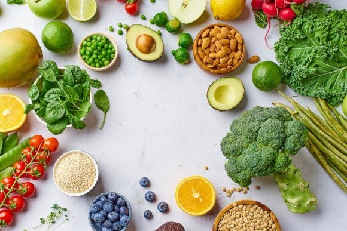

식품공학 관련 용어

- 식품공학(食品工學, food engineering)
식품가공등에 사용되는 물리적, 기계적 조작의 원리와 장치에 관한 지식을 다루는 분야
- 상업적 살균
- 제품을 가열살균 할때 품질을 유지하기 위해 식중독균과 부패미생물만을 지표미생물로 하여 사멸하는 방법
- 겉보기점도
- 비뉴턴 유체에서 전단응력과 전단속도의 비를 나타내는 값
- 비뉴턴유체
- 전단속도의 크기에 따라 점성이 변화하는 유체
- 냉동부하
- 식품을 냉동시킬 때 냉동온도까지 내리는데 필요한 제거열량을 의미